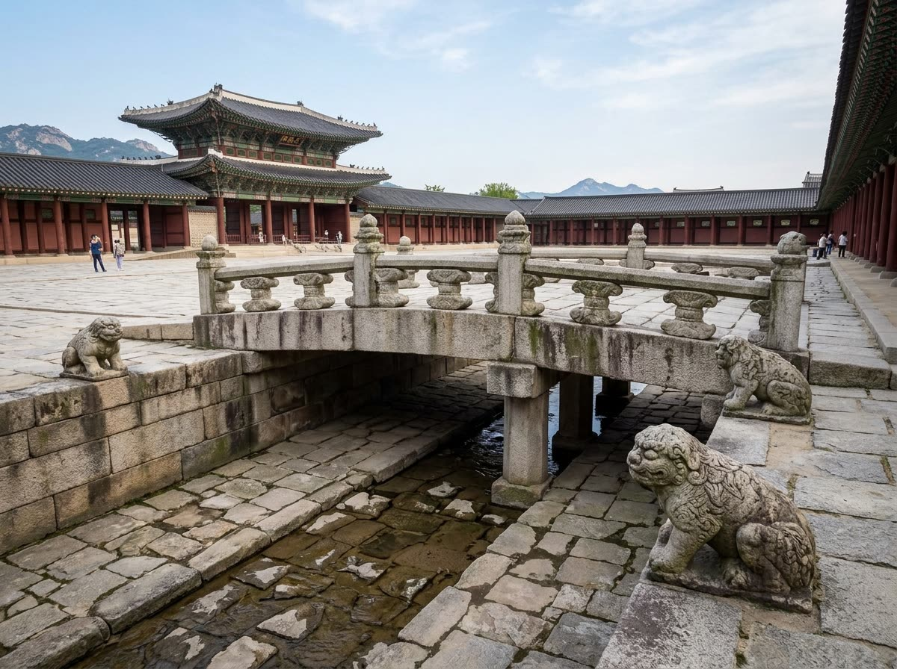

4K 드론 항공 영상
2분 12초서울 도심과 북악산 품에 안긴 경복궁의 웅장한 전경
태조 4년(1395)에 창건된 조선 왕조의 으뜸 궁궐, 경복궁의 역사와 주요 전각, 4K 드론 영상과 안예은의 「메롱해치」 뮤직비디오, 사계절 전각 사진 12선을 한 자리에서 감상하실 수 있습니다.
조선 왕조 제일의 법궁으로, '큰 복을 누리며 번영하라'는 뜻을 담고 있습니다. 아래 항목을 열어 역사와 주요 전각, 관람 예절을 확인해 보세요.
태조 이성계가 한양으로 도읍을 옮긴 뒤 가장 먼저 세운 조선의 정궁입니다.
전쟁으로 대부분의 전각이 소실되어 약 270년간 빈터로 남아 있었습니다.
고종 때 흥선대원군의 주도로 중건되며 조선 왕실의 권위를 되찾았습니다.
일제강점기에 훼손된 전각과 권역을 되살리는 단계적 복원이 이어지고 있습니다.
경복궁의 정문으로, 서울 도심과 궁궐을 잇는 상징적인 문입니다.
왕의 즉위식과 주요 국가 의식이 거행되던 정전으로, 국보로 지정되어 있습니다.
넓은 연못 위에 세워진 누각으로, 나라의 큰 연회와 사신 접대가 열리던 곳입니다.
연못 한가운데 섬에 세워진 육각형 정자로, 후원의 단아한 아름다움을 보여 줍니다.
하늘에서 바라본 경복궁 4K 드론 항공 영상과 안예은의 「메롱해치」 뮤직비디오를 감상하세요.
서울 도심과 북악산 품에 안긴 경복궁의 웅장한 전경
경복궁의 전각과 해치의 이야기를 담은 뮤직비디오
광화문에서 후원까지 전각 사이를 천천히 거니는 4K 영상
경복궁을 지키는 해치의 시선으로 600년의 시간을 노래하는 테마곡입니다.

재생 시간 04:01
조선 왕실의 위엄과 궁궐의 고즈넉한 울림을 담은 곡입니다. 이어폰과 함께 감상하시면 더욱 생생하게 즐기실 수 있습니다.
경회루와 후원의 고요한 정취를 담은 잔잔한 연주곡입니다.
광화문부터 집옥재까지 경복궁의 주요 전각과 풍경 12선입니다. 사진을 선택하면 큰 화면으로 감상하고 좌우로 넘겨 볼 수 있습니다.